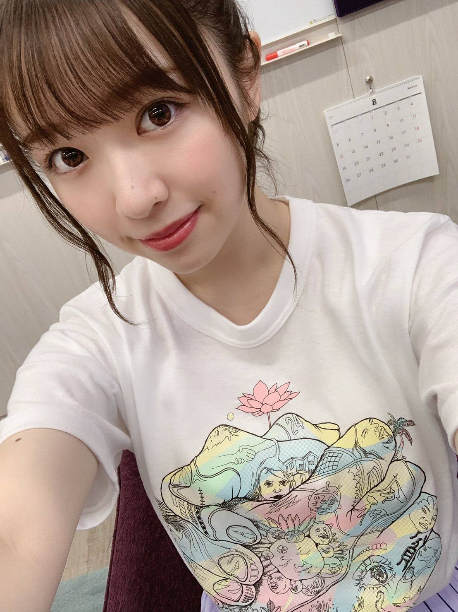
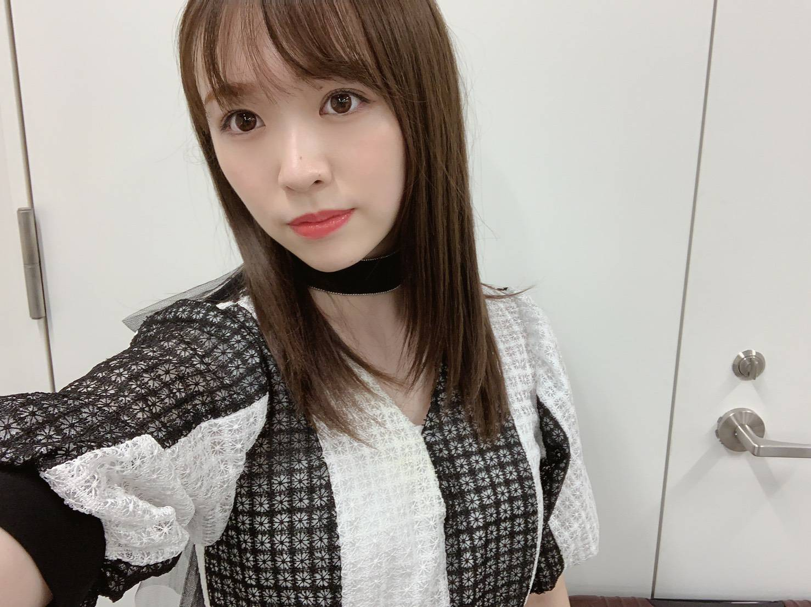

2019/0903Tue涼し

24時間TVに出演させて頂きました。
小さい頃から唯一ずっと見てきていた番組に
出させて頂いたことを光栄に思います！
Sing Out!の歌詞は乃木坂を知らない方達にも
聴いてほしいくらい
本当に素敵な楽曲だなあと思います。
そんな素敵な楽曲、選抜メンバーとして
入れていろんな歌番組に出させて頂いて
本当に幸せな期間でした！
24枚目も、宜しくお願い致します！！！
本日発売日です！ぜひお手に取って頂けると
嬉しいです！

みおぽん
真夏の全国ツアー、今年も走りきったぞ〜！
携わって頂いた全ての関係者の皆様、
ライブスタッフの皆様、
お疲れ様でした！
そして有難うございました。
ファンの皆様の声援のおかげで
私達は駆け抜けられました。
有難うございました！
真夏の全国ツアーは本当に毎年好きだな
というか私はライブが本当に好きです。笑
玲香さんが9月1日をもって卒業されました。
玲香さんとは舞台で2ヶ月くらい一緒に過ごしたり
メンバー何人かと家で鍋をつついたり
思い出は沢山あります。
卒業していくメンバーを見送るのは
悲しいし寂しいけど、
玲香さんを見送るのはまた何か別の感情でした。
乃木坂46を作り上げて引っ張ってくれて
影でずっとみんなを笑顔に支え続けてきてくれた方
本当に沢山助けられました。
8年間本当にお疲れ様でした。
また別の場所で輝いてる玲香さんを見るのが
楽しみです！

仲良しみなみちゃん♡

みり愛
2019/09/03 20:12


コメント(402)
全国ツアーお疲れ様でした！
全握ありがとうございました！
みり愛エルボー最高ですよ笑笑
毎回楽しませて貰ってます笑
神宮ライブお疲れ様でした！！
初日はアリーナ、2日目はスタンド、3日目はライビュで参戦しました！！
キレキレのダンスがほんとに圧倒的な存在感でみり愛ちゃん身長はちょーーっと小さいけど直ぐに見つけられるんです！
アンダラ楽しみにしてます
絶対に当てて参戦します！
あと、個握もぼちぼち取っているのでよろしくお願いします
これからもずっと応援してます！！
いつもありがとうございます！
今週末名古屋行くね〜
ライブ最高でした
12月の名古屋と大阪の全握で会いに行くね！
24時間テレビも見たよ！可愛いかった
すごいよかったよ！
全ツお疲れ様
1117行くからね〜〜〜！楽しみにしててね〜〜〜！
全ツは全会場行ったよ！！
みりあちゃん頑張ってる姿を見て沢山元気を貰った！！
本当にありがとう！！！
ゆっくり休んでね！！
つぎは10/20の全握行くね！！
真夏の全国ツアー2019年お疲れ様でした‼️
京セラ2日目アリーナやったけど行けなかったー
ビューイングでみり愛ちゃんと日奈子とキャプテンの有志バッチリ見てた！
いい夏をありがとう！
とても最高のライブでした。これからもみり愛ちゃんも乃木坂も応援していきます！自分の生きがいです。ありがとう。
また握手会で野球の話しましょう！
久々にブログコメントできる〜！
全国ツアーお疲れ様でした！
Sing Out!!!
ほんまにいい曲！
そんな素晴らしい曲にみり愛ちゃんが選抜メンバーに選ばれて自分は幸せ者です！
ほんまにありがとう！！！
夜になると過ごしやすくなってきたね。
すこーし涼しいもんね。
ライブお疲れ様っ。
今度は来月のアンダーライブに向けてって感じかな？
神宮行けなかったけど、千秋楽ライブビューイング楽しかったですー！
そして24枚目シングルもフラゲしてきましたー
早速何回も聴いてます！
体調に気をつけて頑張ってください！
再来週の握手会とても楽しみにしてます！
ライブお疲れ様でした！
神宮の三日間しか行けなかったけどみり愛ちゃんの最高のパフォーマンスを見れてもう満足です！失恋お掃除人最高だったよ！色々話したいけど握手券取れなかったのよ…なので大阪全握の時楽しみにしてます！
ほんとに可愛すぎて癒されましたー
日奈子ちゃんと映ったとこ見たら自然と笑顔になりますねー
ほんとに最高でした！！！
次の更新も待ってます☺
初選抜としてのツアーを回るというのは今までの全国ツアーと何か違うものがあったと思う。見ていてみり愛のダンスひとつひとつに気持ちがこもっていて本当に魅了されました！
これから玲香が卒業して新しい乃木坂として進む道も応援します！真夏キャプテンを支えてあげてね！
全ツお疲れ様でした！
7日の個握楽しみにしてるねー！1年半ぶりやー！
初日アリーナで、しっかりと目に焼き付けましたよ！
やっぱあの日常はヤバいね！
唖然と言うか惚れ惚れしました！
ブログ更新もありがとう！
Sing Out!ほんまにいい曲すぎる！！大好き！
24時間テレビめっちゃよかったよ！！
神宮お疲れ様！！ビューイングやったけどめっちゃ楽しめた！！ほんまにいい思い出をありがとう いい締めくくりでした！！玲香の卒業は悲しいけどまたこれで乃木坂が強くなれると思ってる！！これからも応援してるよ！！大好き！！
全国ツアーお疲れ様！！
選抜としてのツアーだったのでみり愛ちゃんのパフォーマンスをたくさん見られて嬉しかった！！
Sing out!のときはステージ上手側ちゃんと注目してました。
咄嗟もすごいよかったし、インフルエンサーの三列目端のポジションもしっかり見えて嬉しかった！
今週の握手会行くから、またそのときに感想伝えます！
神宮も行けてよかった！！
全ツお疲れ様でした！
全ツが終わると夏の終わりをすごく感じます。
今年も1公演だけだけど行けてよかった！
素晴らしい時間をありがとう！
留学中のカナダからでした。
では！！
また握手会行くから待ってて☺️
ライブお疲れ様！！
可愛くてダンスの上手いみり愛に見惚れてしまいました！
みり愛にもいつか卒業が来るんだなぁって思うと悲しくなるけど、その時はちゃんと応援するね！
ゆっくり休んでね！
そして、真夏の全国ツアーお疲れ様でした！
神宮の最終日だけ参加させてもらいました！みり愛や他のメンバーの頑張ってる所、楽しんでる所がアリーナからだったので凄く伝わりました！
玲香さんの卒業は寂しいですが、これからの乃木坂が楽しみです！！
感想はまた、個握で話しますね！
本当にお疲れ様でした<(_ _)>
ガンボー
24時間テレビ出れてほんと良かったね！
Sing Out!って歌詞も良いし、テンポもクラップして幸せな気持ちになれるよね^ ^
ライブでクラップに参加できて良かった！
ライブ楽しかったよ！
みり愛がたぶん気づいてくれて嬉しかったです笑
ダンスもさすがみり愛さん、お綺麗でした笑
腕の動きとか胴の動きとか、一つ一つ綺麗だし、楽しそうに踊ってて観てて嬉しかったよ！
新キャプテンとこれからの乃木坂が坂を上り続けれるよう頑張ってね！
p.s.ブログのタイトルびっくりしたー笑
涼
わ！みなみちゃん！！！みなみりあ可愛すぎる
大阪と神宮で元気いっぱいのみり愛ちゃんが見れて幸せでした！！
今週の握手会も行きます〜♪
今はゆっくりして下さい！
体調に気を付けて(*>д<)
んじゃね～！Σ⊂(ﾟДﾟ )
そしてライブお疲れ様です!!神宮2日目の失恋お掃除人のダンスめちゃくちゃかっこよかったです!!より一層好きになりました!!
多分ライブで疲れてると思うのでゆっくり休んでください!!
またブログ更新待ってます!!
24時間テレビ見ました！
介護職してるなるからしたら乃木坂が24時間テレビに出てくれるだけで嬉しくてなんか感動しちゃいました(笑)
すごいよかったーー(^^)
全ツファイナルは映画館で見てたよー！
やっぱりSingoutで踊るみりあを見れてよかった、嬉しかったです！みり愛にとっていい夏になったかなー！駆け抜けれたかなー！初選抜の全ツ！人目見れて良かったです！
特に日常のダンス、心に残ってる！最高でした！
アンダラも時間の合間ぬって休みだったら行きたいと思います！
体壊さないように気をつけてー(*_*)
久々のコメントでした(笑)
それではまた〜〜
なる
今年も全国ツアーお疲れ様でした。
選抜としてのツアーで大変だったと思うけど、みり愛ちゃんをたくさん見ることができてよかった。ありがとう。
SingOut!もみり愛ちゃんに取って大切な曲だと思うけど、僕達みり愛ちゃん推しにとっても特別な曲だよ。
ほんとにこの23rdの期間楽しかった。ありがとう！
そして、日奈子ちゃんプロデュースの失恋お掃除人。
衣装に見覚えてあったけど笑
さすがのパフォーマンスだった！！
他にもたくさん言いたいことあるけど握手で言うね
アンダラ発表されたね！
平日だけど絶対行くからね！！！
7.8日名古屋握手行くからね〜！
楽しみましょ！！！
握手会で話したいことたくさんあるけど
初めてだからめっちゃ緊張してます！
よろしくお願いします！！！
ライブのみり愛ちゃんもめっちゃ可愛かったし、日常のダンスの時はめっちゃかっこよくて感動しました。
アンダーライブも絶対に応援に行きます。
これからも体調に気をつけて頑張ってください。
いやーー！走りきったねーー！！sing outのみり愛のダンスは本当にしなやかで大きくて美しかった！何回見ても飽きずに心惹かれる！！毎年全ツにいって夏の始まりを感じて神宮で夏の終わりを感じるってのが恒例になりよる！！
れいか最後のライブは泣きすぎて途中声出されんやったわ……
24枚目も握手会よろしく！！アンダラにも絶対行くね！！
また村長団扇を掲げるわ！！レスくれよ！！笑笑
名古屋、大阪、東京と参戦させてもらいました！
とても楽しかった！！！
みり愛ちゃんの出番が多くて嬉しかった
sing outは会場で一体感があってすごい好き！
日常はほんまダンスかっこいいし！！
また名古屋全握、東京個握で感想伝えるね！
これからも応援してます
メンバーとのお写真載せてくれるのすごい嬉しいよ！
みり愛すごい美人だぁ、、、！！
本当にだいすきだぁぁぁーーい！！
またの更新待ってまぁーす！！ばいばーい！！！
全国ツアーお疲れ様！
神宮3日間遊びに行かせてもらったよ。
ライブでのみり愛ちゃんはやっぱり輝いていて素敵でした。
また握手会の時に感想たくさんいうと思うけどよろしくね笑
玲香ちゃんの卒業も見させてもらったよ。
キャプテンとして引っ張ってきた人の卒業は見てるファンとしても、グッとくるものがありました。
また色々な場面で活躍する玲香ちゃんが楽しみだね！
今週末の名古屋の握手会にも行くからよろしくね。
じぁまたね！
hideto
コメントする